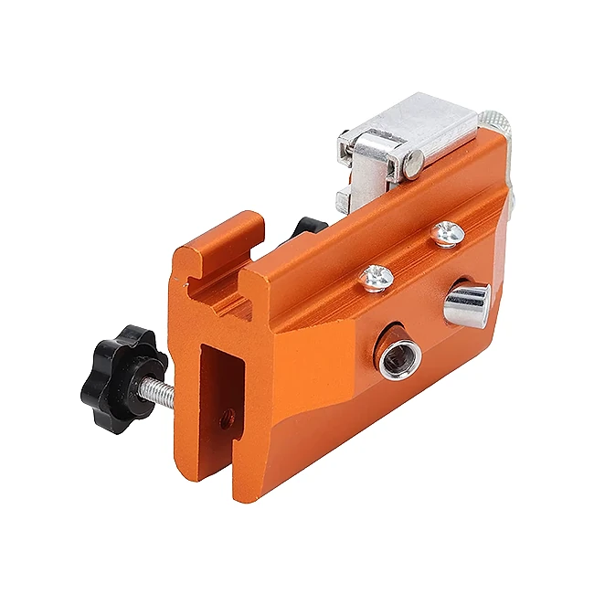
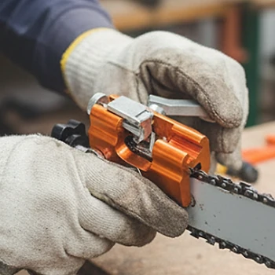

Was ist SawShark und wie funktioniert es?
SawShark ist ein kleiner, manueller Kettenschärfer für Kettensägen. Das Werkzeug wird direkt an der Schwertführung der Säge befestigt und schärft die Zähne der Kette mit einem Schleifkopf, den Sie über einen Drehgriff bewegen. Laut der offiziellen Website sollen Sie damit stumpfe Ketten in wenigen Minuten wieder scharf bekommen, ohne Strom, ohne Batterien und ohne Werkstattbesuch.
Der Hersteller erklärt das Prinzip so: Eine integrierte Winkelführung hält den Schleifkopf immer im gleichen Winkel zum Zahn. Sie klemmen das Gerät mit einem Klemmmechanismus an das Schwert, drehen am Griff, und jeder Zahn wird gleichmäßig nachgeschliffen. Das soll die typischen Fehler beim Feilen von Hand vermeiden, bei dem die Zähne oft unterschiedlich lang oder in ungleichem Winkel geschärft werden.
Laut Website funktioniert SawShark mit allen Kettensägen-Marken, Schienenlängen und Kettentypen, ganz ohne zusätzliche Aufsätze. Das Gehäuse besteht aus Aluminium- beziehungsweise Speziallegierung, die Spezifikation nennt Edelstahl und Legierung als Material. Das Gewicht liegt bei 235 Gramm, sodass das Werkzeug leicht in die Jackentasche oder den Werkzeugkasten passt.
Als Vorteile nennt der Hersteller sauberere und geradere Schnitte, weniger Kraftaufwand, geringeren Kraftstoffverbrauch und eine längere Lebensdauer der Kette. Zudem verringere eine korrekt geschärfte Kette das Rückschlagrisiko, das bei stumpfen oder ungleichmäßig geschärften Ketten höher ist.
Zur Einordnung: Manuelle Schärfgeräte, die am Schwert befestigt werden, gibt es seit Jahren. Sie sind eine günstige Alternative zu elektrischen Schärfgeräten und zum Schärfen beim Fachhändler. Für Brennholz, Gartenpflege und gelegentliche Waldarbeit sind sie praktisch; bei stark beschädigten Ketten bleibt der Fachhandel meist die bessere Wahl. Wer seine Säge regelmäßig nutzt, spart sich mit einem eigenen Schärfer aber viele Wege und kann die Kette direkt im Wald oder im Garten nachschärfen, sobald sie spürbar nachlässt.
SawShark Funktionen
Laut den Produktspezifikationen auf der offiziellen Website bietet SawShark:
Gewicht: 235 Gramm.
Gerätemaße: 70 × 60 × 28 mm, mit Griff 98 mm breit.
Material: Edelstahl und Legierung.
Schleifköpfe: 1 Schleifkopf im Lieferumfang.
Befestigung: Befestigungsstift mit 48 mm Länge und M5-Gewinde.
Lieferumfang: Schraubenschlüssel, Befestigungsschrauben, Montagematerial und Befestigungsstifte.
Auf den Produktbildern ist ein kompaktes, orangefarbenes Gehäuse mit silbernem Schleifkopf, schwarzem Drehknopf zum Festklemmen und einem Kurbelhebel zu sehen. Die Verpackung misst laut Spezifikation 11 × 7,5 × 9,5 Zentimeter.
In einer Vergleichstabelle stellt der Hersteller SawShark elektrischen Schärfgeräten und Handfeilen gegenüber: Elektrische Geräte würden die Zähne oft überhitzen, Handfeilen seien langsam und ungleichmäßig. Genannt werden perfekte Winkelkontrolle, schnelles Schärfen, Einsatz überall, Kompatibilität mit allen Ketten, kein Überhitzen und Sicherheit auch für Anfänger. Die beiden Vergleichsprodukte werden nicht namentlich genannt, die Tabelle ist eine Herstellerangabe. Angaben zur Körnung oder zum Durchmesser des Schleifkopfs und zu passenden Kettenteilungen fehlen. Ob ein Ersatzschleifkopf separat erhältlich ist, geht aus der Website ebenfalls nicht hervor; bei häufigem Einsatz nutzt sich der Schleifkopf mit der Zeit ab.
SawShark Anwendung
Laut den häufig gestellten Fragen brauchen Sie keine Erfahrung. Sie befestigen das Gerät am Schwert Ihrer Kettensäge und drehen an der Kurbel; die integrierte Winkelführung sorgt dafür, dass jeder Zahn im richtigen Winkel geschärft wird. Eine komplette Kette soll sich so in wenigen Minuten schärfen lassen.
Vor dem Schärfen sollten Sie die Säge ausschalten, bei Akku-Sägen den Akku entfernen und bei Benzin-Sägen den Zündkerzenstecker abziehen. Tragen Sie Arbeitshandschuhe, denn die Kettenzähne sind auch stumpf noch scharfkantig. Stellen Sie die Kettenspannung so ein, dass sich die Kette von Hand weiterziehen lässt, aber nicht durchhängt.
Klemmen Sie SawShark mit dem Drehknopf fest an das Schwert und richten Sie den Schleifkopf am ersten Zahn aus. Schärfen Sie dann Zahn für Zahn mit gleich vielen Kurbelumdrehungen und ziehen Sie die Kette jeweils weiter. Da die Zähne einer Kette abwechselnd nach links und rechts zeigen, schärfen Sie üblicherweise erst die eine Seite und dann die andere. Die genaue Vorgehensweise steht in der beiliegenden Anleitung.
Allgemeine Hinweise: Prüfen Sie nach dem Schärfen auch die Tiefenbegrenzer und lassen Sie stark beschädigte Ketten vom Fachhandel prüfen. Entfernen Sie nach der Arbeit Metallspäne vom Gerät, ölen Sie die Kette und lagern Sie den Schärfer trocken.
SawShark – Rückerstattung
Laut der offiziellen Website gilt eine 30-Tage-Geld-zurück-Garantie. Wenn Sie mit SawShark nicht zufrieden sind, können Sie Ihre Bestellung innerhalb von 30 Tagen ab Erhalt zurückschicken. Der Hersteller schreibt, über 2.000 zufriedene Kundinnen und Kunden würden SawShark bereits nutzen.
Für die Einzelheiten verweist die Website auf ihre Richtlinie zu Rückgabe und Rückerstattung im Fußbereich der Seite. Dort finden Sie außerdem einen Link zum Widerruf des Vertrags, die Kontaktseite, die Nutzungsbestimmungen, die Datenschutzbestimmung und das Impressum. Bei Verkäufern dieser Art müssen Rücksendungen üblicherweise vorher beim Kundenservice angemeldet werden, und die Ware sollte vollständig mit Zubehör und Verpackung zurückgehen.
Laut häufig gestellten Fragen werden alle Bestellungen innerhalb von 48 Stunden nach Bestellbestätigung versendet. Sie erhalten eine E-Mail mit der Sendungsnummer. Der Standardversand dauert je nach Standort in der Regel 5 bis 12 Werktage, in Hochphasen oder bei schlechtem Wetter auch etwas länger.
Für Verbraucher in der EU gilt zusätzlich das gesetzliche Widerrufsrecht von 14 Tagen, unabhängig von der freiwilligen Garantie. Bewahren Sie Originalverpackung, Schraubenschlüssel, Schrauben und Bestellbestätigung auf und testen Sie das Werkzeug bald nach der Lieferung an Ihrer Säge, damit Sie innerhalb der Frist reagieren können. Notieren Sie bei einer Rücksendung die Sendungsnummer, denn sie dient als Nachweis für die Erstattung, falls es Rückfragen gibt.
SawShark Kundenbewertungen
-
Lukas H.Verifizierter Kauf
„Ich schärfe die Ketten auf unserem Hof jede Woche. SawShark ist das einfachste und zuverlässigste Werkzeug, das ich je benutzt habe. In wenigen Minuten ist die Kette wie neu.“
-
Tobias K.Verifizierter Kauf
„Dieses Werkzeug hat sich an einem Wochenende schon bezahlt gemacht. Keine Fahrten mehr zum Baumarkt, und meine Säge schneidet glatter als je zuvor.“
-
Martin B.Verifizierter Kauf
„Als professioneller Baumpfleger war ich zuerst skeptisch. Nach dem Testen bin ich begeistert: perfekte Schleifwinkel, robuste Verarbeitung und extrem schnell.“
SawShark – Wo kaufen?
SawShark wird über die offizielle Bestellseite get-sawshark.com verkauft. Dort finden Sie die Übersicht, die Eigenschaften, den Vergleich, die Kundenbewertungen und die häufig gestellten Fragen mit den Produktspezifikationen, und Sie wählen direkt die Anzahl der Geräte.
Manuelle Kettenschärfer in sehr ähnlicher Bauform werden von vielen Anbietern verkauft, oft in derselben Farbe und unter wechselnden Namen. Bei Angeboten auf Marktplätzen ist nicht sicher, ob es sich um dasselbe Modell mit demselben Zubehör handelt, und die 30-Tage-Garantie des Verkäufers gilt dort in der Regel nicht.
Die Bestellseite arbeitet mit Hinweisen auf knappe Lagerbestände und ein bald endendes Angebot. Lassen Sie sich davon nicht drängen. Prüfen Sie vor dem Abschluss die Bestellübersicht, die Anzahl, das Land und die Versandkosten. Achten Sie darauf, dass Sie sich wirklich auf get-sawshark.com befinden, denn nur dort gelten die Bedingungen des Verkäufers. Wer mehrere Sägen mit unterschiedlichen Ketten besitzt, sollte vorher prüfen, ob der mitgelieferte Schleifkopf zu allen Ketten passt. Im Zweifel hilft eine kurze Anfrage beim Kundenservice.
Um sicherzugehen, dass Sie das Originalprodukt erhalten, besuchen die meisten Nutzer die offizielle Website.
Ist SawShark Betrug?
Nach den verfügbaren Informationen gibt es keinen Hinweis darauf, dass SawShark Betrug ist. Das Werkzeug wird über eine eigene Bestellseite mit Funktionsbeschreibung, Vergleich, Kundenbewertungen, häufig gestellten Fragen, Produktspezifikationen, Rückgaberichtlinie, Widerrufslink und Impressum verkauft. Die Seite gehört zum selben Shopsystem wie andere Produkte der Label Products B.V. aus den Niederlanden.
Positiv sind die konkreten Angaben zu Gewicht, Maßen, Material und Lieferumfang, die 30-tägige Geld-zurück-Garantie, der Versand innerhalb von 48 Stunden mit Sendungsnummer und das einfache, stromlose Prinzip.
Es gibt aber Punkte, die Aufmerksamkeit verdienen. Die Aussage, SawShark passe zu allen Kettensägen und Kettentypen, ist sehr weitreichend, denn Ketten unterscheiden sich in Teilung und Feilendurchmesser, und die Website nennt den Durchmesser des Schleifkopfs nicht. Die Vergleichstabelle nennt keine echten Konkurrenzprodukte, und Angaben wie 4,9 Sterne aus tausenden Bewertungen lassen sich nicht überprüfen. Die Bestellseite nutzt außerdem Lagerhinweise als Verkaufsdruck.
Vorsicht ist bei sehr ähnlichen Schärfern auf anderen Plattformen geboten, denn dort ist oft unklar, wer der Verkäufer ist und welche Garantie gilt.
Wer prüft, ob das Werkzeug zur eigenen Kette passt, und direkt auf der offiziellen Website bestellt, geht nach heutigem Stand kein besonderes Risiko ein. Bei Fragen zur Kompatibilität hilft der Kundenservice vor der Bestellung gerne weiter, idealerweise mit Angabe von Sägenmodell und Kettentyp.
Wer Produktdetails überprüfen oder die aktuelle Verfügbarkeit prüfen möchte, ist auf der offiziellen SawShark-Website am sichersten aufgehoben.
